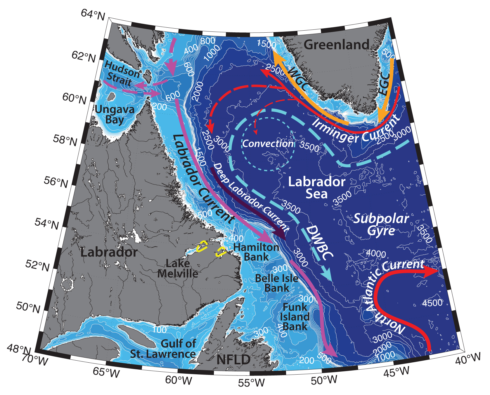

Schematic water circulation patterns and geographical place names in the Labrador region. Adopted from Cunny et al. (2002), Pickart et al. (2002), Yashayaev (2007), Zantopp et al. (2017). Dashed yellow line marks the studied region.
Hydrography of the Lake Melville estuaries is determined by the local freshwater runoff and the inflow of oceanic waters from the Labrador Shelf, as well as atmospheric forcing and ice.
Lake Melville is a subarctic fjard estuary (compared to fjords, fjards have generally lower topography on the adjacent land, shallower bathymetry in the fjard and forested drainage basin with deeper soils; e.g. Kamula et al., 2017) on the Labrador Peninsula, formed by the glacial-origin submergence of a valley. Lake Melville inflows via Rigolet Narrows into Hamilton Inlet, which, in turn, is an inlet of the Groswater Bay. Together these estuaries are 140 km long and are draining the Churchill and Naskaupi rivers, accounting for the 45% of the total surface water runoff from the Labrador (125 000 km2; Kamula et al., 2017). A shallow sill (~35 m) of the Rigolet Narrows (at the eastern end of Lake Melville) and its narrow width (2.8 km) restrict the exchange between the lake and Groswater Bay, hence bottom waters and the terrestrial matter they carry are generally trapped in the lake.
Lake Melville hydrography is characterized by the brackish surface layer (S = <~10; top 10-20 m) due to the riverine outflow, which is advected seawards, and the counterflowing saltier bottom layer from Groswater Bay (S = ~20–28; Kamula et al., 2017). Strong density gradient, that separates these two water masses, disappears during fall and winter mixing due to surface cooling. The region freezes up in late November – December and breaks up in April – May, however intensified river discharge from the Churchill River, as well as strong tidal currents are known to cause early break ups and even keep the Rigolet Narrows and Groswater Bay ice-free year-round (Kamula et al., 2017). The two-layer estuarine circulation of the Lake Melville and contiguous inlets strongly influences the ecosystem of the region.
Hydrography of the Labrador Shelf is determined by large variety of factors, but mainly by the Labrador Current, deep convection and formation of the Labrador Sea Water, Deep Western Boundary Current and atmospheric forcing.
General circulation in the Labrador Sea is cyclonic, formed on the surface by two fresh baroclinic boundary currents – the West Greenland Current and the Labrador Current. A strong salinity gradient separates these currents and the deep Labrador Basin.
The Labrador Current flows southeastwards along the Labrador Shelf, carrying fresh and cold water from Baffin Bay, the Hudson Bay System and the Canadian archipelago (T ∼ −1.5°C, S ≤ 34). The current incorporates the West Greenland Current, Baffin Current (outflow along the west side of Baffin Bay) and Hudson Strait outflow. Straneo and Saucier (2008) have calculated, that the latter accounts approximately for 15% of the volume and 50% of the fresh water carried by the Labrador Current. The Labrador Current is a shallow ~ 50 km wide current, advected mainly above the shelf and upper slope and extending down to 500 m. It is one of the main pathways for the equatorward export of cold and fresh waters from the Labrador Sea; it carries icebergs from the Canadian archipelago southwards (e.g. Yashayaev, 2007). The Labrador Current largely determines hydrography, productivity and ecosystem properties along the Labrador Shelf (and the downstream North Atlantic; Straneo and Saucier, 2008). Its transport is estimated to be ~11 Sv ±4 Sv (Lazier and Wright 1993). Due to variations in freshwater flux from the Baffin and Hudson bays (seasonal freshwater input by rivers and sea-ice melt), the maximum velocities in the current are observed during October, and minimum in April – March (Lazier and Wright 1993). Large nutrient input from the Hudson Strait is responsible for the higher productivity of the Labrador shelf, relative to the Baffin Bay shelf (e.g. Drinkwater and Harding, 2001; Straneo and Saucier, 2008). Large tides in Hudson Strait with amplitudes of 5 to 7 m and tidal currents of up to 3 m/s enhance mixing in the region, tidal fronts separate the areas (Sutcliffe et al., 1983).